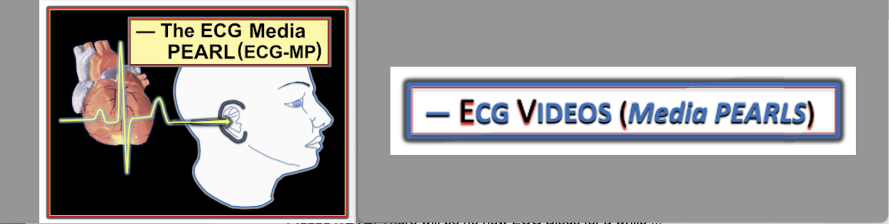
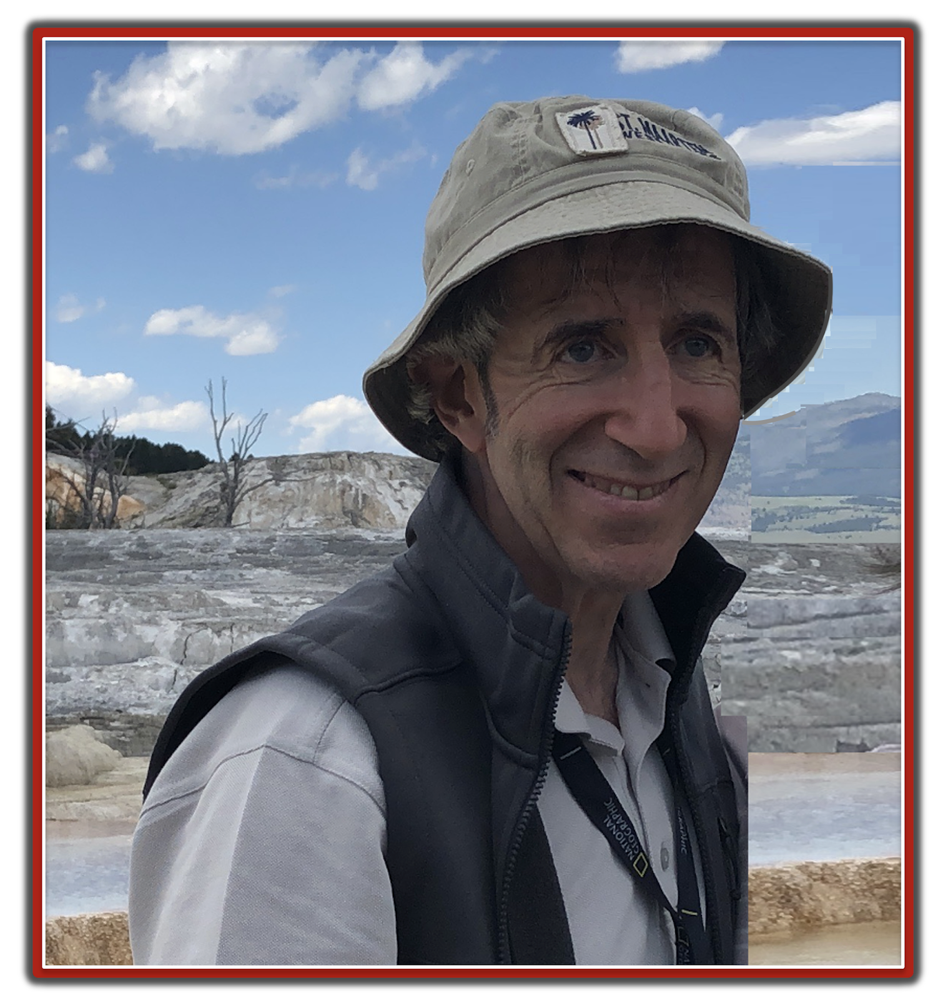
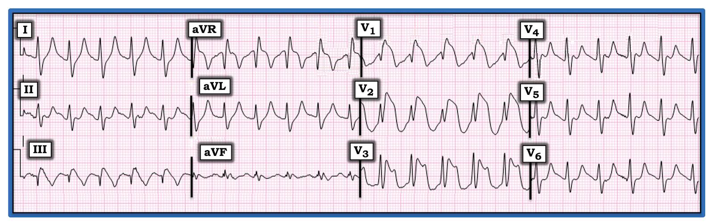
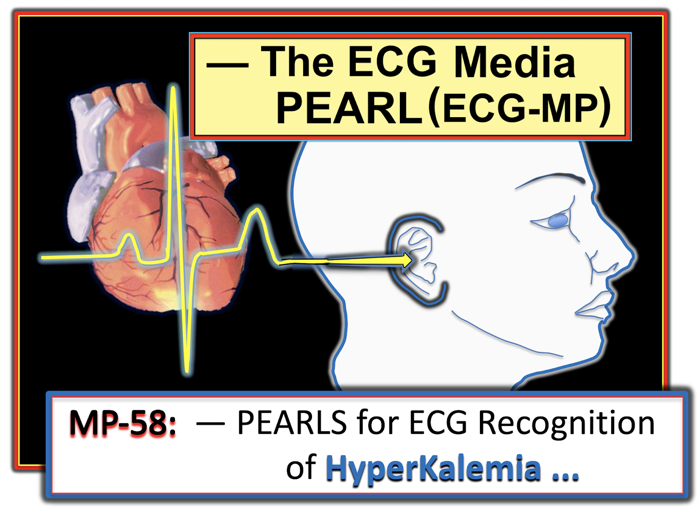
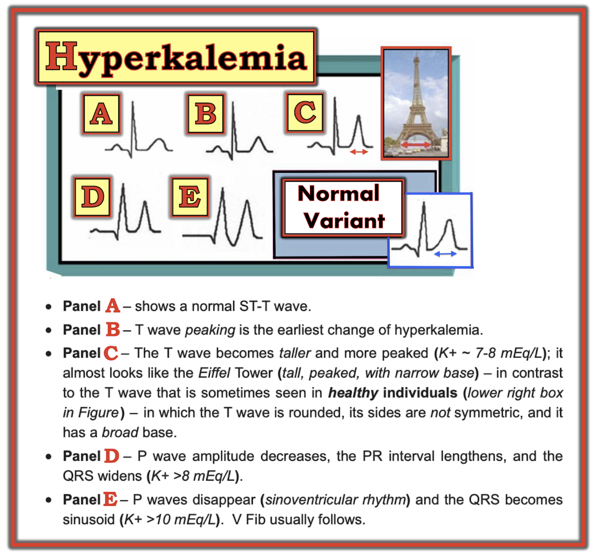
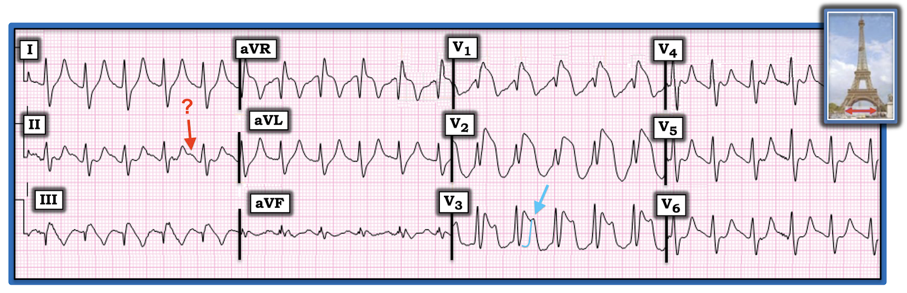
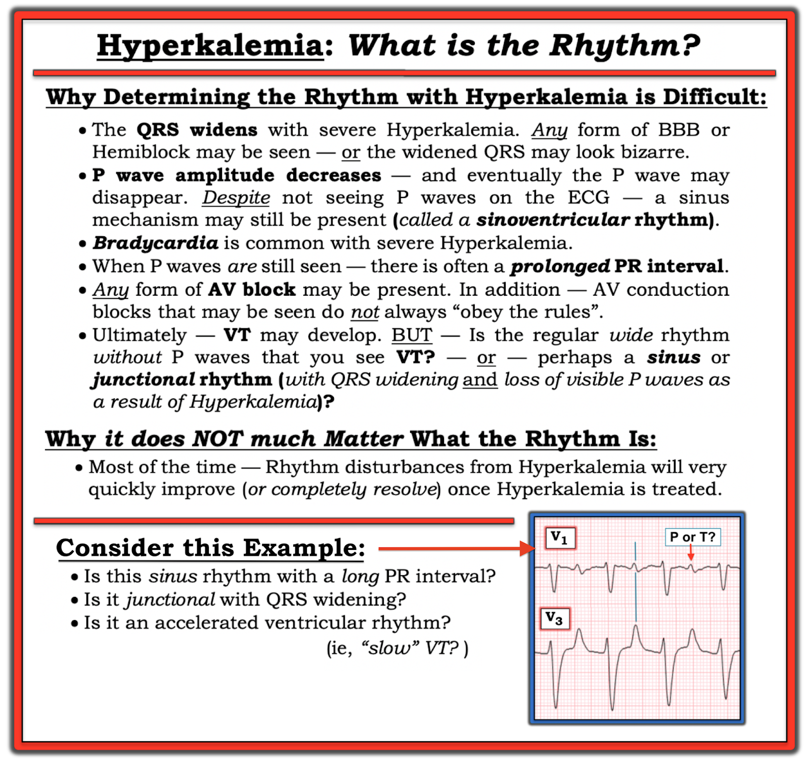

ECG Blog #244 (58) — Phòng thông tim đã được kích hoạt. Bạn có đồng ý không?
==============================
Xin LƯU Ý: Sẽ không có bài ECG Blog mới nào trong một thời gian ...
Toàn bộ tài liệu trên trang ECG Blog này vẫn được mở!
- Thẻ INDEX ở góc trên bên phải mỗi trang có Mục lục kèm liên kết, xếp theo chủ đề.
- NẾU bạn cuộn xuống một chút ở cột bên phải của blog này — Bạn sẽ thấy biểu tượng "ECG Audio PEARLS". Liên kết này dẫn bạn tới 45 Pearl dạng Audio, tất cả đều mới — và được sắp xếp theo chủ đề.
- Ngay bên dưới các Audio Pearl — là biểu tượng "ECG Video PEARLS". Mỗi Pearl dạng Video trong 16 Pearl gần đây của tôi đều được đưa lên chính trang này để tiện tham khảo — cũng được sắp xếp theo chủ đề.
- Nếu bạn đang tìm tài liệu để ôn tập — tôi gợi ý bạn xem các bài blog gần đây nhất của tôi — vốn được liên kết với từng Audio Pearl và Video Pearl.





==============================
ECG Blog #244 (MP-58) — Phòng thông tim đã được kích hoạt. Bạn có đồng ý?
==============================
Điện tâm đồ ở Hình-1 được ghi ở một bệnh nhân nam trưởng thành không nói được tiếng Anh, đến khám vì đau bụng cấp. Bệnh nhân có tiền sử đái tháo đường đã biết — nhưng do rào cản ngôn ngữ, ngoài ra bệnh sử hết sức hạn chế.
- Khi thấy điện tâm đồ ở Hình-1 — phòng thông tim (cath lab) đã được kích hoạt.
CÂU HỎI:
- Có nên kích hoạt phòng thông tim hay không?
- Hãy giải thích câu trả lời của bạn.


=======================================
LƯU Ý: Đến đây, một số bạn đọc có thể muốn nghe ECG Audio PEARL dài 8:30 phút trước khi đọc Suy nghĩ của tôi về điện tâm đồ ở Hình-1. Bạn có thể tham khảo Suy nghĩ của tôi về bản ghi này bất cứ lúc nào (nằm ở bên dưới ECG MP-58).
=======================================


ECG Media PEARL #58 (8:30 phút Audio) hôm nay — Điểm lại một số Pearl ít được biết đến giúp nhận diện Tăng kali máu trên điện tâm đồ.
Suy nghĩ tuần tự CỦA TÔI về điện tâm đồ ở Hình-1:
Dù tôi luôn "rao giảng" về sự cần thiết phải có hệ thống trong đọc điện tâm đồ (như đã điểm lại chi tiết trong ECG Blog #205) — "con mắt" của tôi ngay lập tức bị hút vào một số dấu hiệu MẤU CHỐT trên điện tâm đồ ở Hình-1. Điều này lập tức gợi cho tôi 2 chẩn đoán điện tâm đồ.
CÂU HỎI:
- 2 chẩn đoán điện tâm đồ nào cần hiện ra trong đầu chỉ trong vài giây khi nhìn điện tâm đồ ở Hình-1?
TRẢ LỜI:
- Có hình ảnh Brugada-1 trên điện tâm đồ.
- Nhiều khả năng có tăng kali máu đáng kể.
ĐIỂM THEN CHỐT (PEARL) #1: Dù cách tiếp cận hệ thống khi đọc điện tâm đồ quan trọng đến đâu — với một số điện tâm đồ, người thầy thuốc giàu kinh nghiệm sẽ ngay lập tức (gần như tự động) biết chuyện gì đang xảy ra chỉ trong vài giây. Khi gặp tình huống này — hãy LẮNG NGHE điều điện tâm đồ đang nói với bạn. Đôi khi chẩn đoán theo bản năng (gần như tự động) mà bạn "cứ thế biết" ngay lập tức có thể đòi hỏi điều trị tức thì (như khi bạn thấy một nhịp nhanh QRS rộng và biết từ hình dạng điện tâm đồ rằng nhịp đó là VT). Vì vậy — Hãy cho phép bản thân 5-10 giây ngắn ngủi để "tiếp nhận" bất kỳ chẩn đoán nào vừa "hiện ra" với bạn. Sau đó hãy quay lại điện tâm đồ — và hoàn tất việc đọc một cách hệ thống.
- Ở Hình-1 — tầm quan trọng của việc nhanh chóng nhận ra hình ảnh Brugada-1 trên điện tâm đồ kèm theo khả năng tăng kali máu nặng là: i) Cần điều trị tăng kali máu ngay lập tức; và, ii) Cả hai tình trạng này đều có thể làm thay đổi hình dạng điện tâm đồ một cách ngoạn mục, theo cách sẽ cản trở việc đánh giá có hệ thống nếu bạn không nhận ra sự hiện diện của chúng. Điều này đã xảy ra trong ca hôm nay — khi những người xử trí ban đầu đã đọc nhầm điện tâm đồ ở Hình-1 là gợi ý STEMI cấp, và vì thế đã kích hoạt phòng thông tim.
Hình ảnh Brugada-1 trên điện tâm đồ:
Như đã minh họa và bàn luận chi tiết trong ECG Blog #238 — hình dạng ST chênh lên dạng vòm (coved) cực độ (gần 10 mm) ở các chuyển đạo V1, V2 và V3, kết thúc bằng sóng T đảo ngược, là chẩn đoán xác định hình ảnh Brugada-1 trên điện tâm đồ. Điều này càng đúng với hình ảnh phức bộ QRST mà ta thấy ở chuyển đạo V1.
- Hình ảnh phức bộ QRST ở chuyển đạo V1 này cần được "khắc sâu" trong não chúng ta — như một dấu hiệu thị giác lập tức lên tiếng: "Tôi là hình ảnh Brugada-1 trên điện tâm đồ".
- Dù có thể hiểu được rằng mức ST chênh lên áp đảo ở các chuyển đạo trước V1, V2 và V3 có thể khiến ta lo ngại một STEMI thành trước diện rộng — chẩn đoán điện tâm đồ thứ 2 mà "con mắt kinh nghiệm" của chúng ta đã đưa ra ( = tăng kali máu) — khiến khả năng đồng thời có một STEMI đang diễn tiến trở nên ít hơn nhiều.
- T.B. (P.S.) Người ta cũng có thể đọc nhầm hình rSR' ở chuyển đạo V1, cùng sóng S tận rộng ở chuyển đạo I và V6, là phù hợp với RBBB. Đúng là hình dạng QRS này phù hợp với RBBB — nhưng RBBB đơn thuần không tạo ra hình dạng đoạn ST mà ta thấy ở cả 3 chuyển đạo trước tim đầu tiên, trong đó đoạn ST chênh lên rất mạnh có dạng vòm (ở V1,V2) và đồ sộ, đi theo một đường kéo dài rất chậm khi đi xuống tới sóng T đảo ngược sau cùng. LƯU Ý: Dù tôi không thể loại trừ khả năng có kèm RBBB nền chỉ từ một bản ghi này — điều chúng ta biết chắc là có hình ảnh Brugada-1 trên điện tâm đồ!
ĐIỂM THEN CHỐT (PEARL) #2: Như đã nhấn mạnh trong ECG Blog #238 — một số tình trạng khác ngoài hội chứng Brugada có thể tạm thời tạo ra hình ảnh Brugada-1 trên điện tâm đồ. Trong số các tình trạng này — Tăng kali máu có lẽ là thường gặp nhất.
- Sự xuất hiện hình ảnh Brugada-1 hoặc Brugada-2 trên điện tâm đồ do một tình trạng khác — với hình ảnh Brugada này biến mất sau khi điều chỉnh (các) yếu tố thúc đẩy — được gọi là Brugada Phenocopy (kiểu hình sao Brugada). Tầm quan trọng của việc nhận ra Brugada Phenocopy — là nguy cơ rối loạn nhịp ác tính thấp hơn nhiều so với hội chứng Brugada.
- Dù người ta vẫn còn lo ngại rằng ST chênh lên ở Hình-1 cũng có thể phản ánh một STEMI đang diễn tiến — Tăng kali máu nặng vẫn cần được điều trị trước khi có thể tính đến thông tim cấp (và trước bất kỳ can thiệp nào cho nhồi máu cơ tim cấp). Vì vậy — cách xử trí ban đầu cho bệnh nhân này về cơ bản đã được xác định chỉ trong vài giây cần thiết để nhận ra tăng kali máu nặng và hình ảnh Brugada-1 trên điện tâm đồ (tức là bắt đầu ngay với Calcium tĩnh mạch, thậm chí trước khi có kết quả xét nghiệm xác nhận).
- Liệu các thay đổi điện tâm đồ ở Hình-1 là Brugada Phenocopy hay hội chứng Brugada — và/hoặc là STEMI — gần như chắc chắn sẽ trở nên rõ ràng khi tiếp tục theo dõi nồng độ K+ huyết thanh — điều trị các tình trạng thuận lợi khác — và qua điện tâm đồ ghi nhiều lần, vốn sẽ cho thấy cải thiện rõ rệt, với ST chênh lên biến mất khi K+ huyết thanh được điều chỉnh NẾU các thay đổi điện tâm đồ ở Hình-1 là hậu quả của Brugada Phenocopy.
Chẩn đoán điện tâm đồ thứ 2 = Tăng Kali máu nặng:
Để cho rõ — tôi đã thêm Hình-2, trình bày trình tự "kinh điển" của các dấu hiệu điện tâm đồ gặp ở các mức độ tăng kali máu tăng dần. Dù hoàn toàn thừa nhận rằng "không phải bệnh nhân nào cũng đọc sách giáo khoa" — và chắc chắn sẽ có những khác biệt về các dấu hiệu điện tâm đồ từ bệnh nhân này sang bệnh nhân khác — tôi nhận thấy việc nắm được các quy luật khái quát của những dấu hiệu điện tâm đồ này ở Hình-2 là cực kỳ hữu ích.
- Dấu hiệu sớm nhất thường gặp của tăng kali máu ( = sóng T nhọn) có thể bắt đầu khi K+ chỉ tăng rất nhẹ (tức là K+ trong khoảng 5,5-6,0 mEq/L) — dù ở một số bệnh nhân, sóng T nhọn sẽ không xuất hiện cho tới muộn hơn nhiều.
- Tôi rất thích hình ảnh tháp Eiffel. Với mức độ tăng kali máu tăng dần — sóng T trở nên cao, nhọn (đỉnh sắc) với đáy hẹp. Dù bệnh nhân có biến thể tái cực hoặc thiếu máu cục bộ cấp (kể cả hình ảnh sóng T de Winter) thường biểu hiện sóng T nhọn — sóng T trong thiếu máu cục bộ hay biến thể tái cực có xu hướng không nhọn bằng sóng T trong tăng kali máu — và, đáy của những sóng T đó có xu hướng không hẹp như trong tăng kali máu.
- T.B. (P.S.) — Dù tôi thấy Hình-2 hữu ích đến đâu trong việc giúp hiểu các thay đổi điện tâm đồ cần tìm khi nghi ngờ tăng kali máu có ý nghĩa lâm sàng — diễn tiến từ nhịp xoang sang VFib như dấu hiệu điện tâm đồ thứ 1 của tăng kali máu đã được ghi nhận. Không phải bệnh nhân nào cũng đọc sách giáo khoa. (emDocs, 2017 — Management of Hyperkalemia).


Các thay đổi điện tâm đồ của tăng kali máu trong ca hôm nay:
Những lý do khiến tôi lập tức nghi ngờ tăng kali máu nặng trong ca hôm nay là:
- QRS giãn rộng (tới ít nhất 0,11 giây ở các chuyển đạo I, II, aVL và các chuyển đạo khác) đáng kể.
- Hình dạng sóng T điển hình của tăng kali máu. Như thấy ở Hình-3 — sóng T ở nhiều chuyển đạo giống tháp Eiffel (tức là sóng T ở các chuyển đạo I, II, aVL; V4, V5 và V6 không chỉ cao, nhọn và đỉnh sắc — mà các sóng T này còn đối xứng với góc lên và xuống dốc như nhau — và có đáy sóng T hẹp).
- Có hình ảnh Brugada-1 trên điện tâm đồ ở các chuyển đạo V1, V2 và V3. Như đã nhấn mạnh ở trên — Brugada Phenocopy thường gặp đi kèm tăng kali máu nặng.
Vượt ra ngoài phần cốt lõi: BẠN có để ý "cái bướu" ở chuyển đạo V3 (mũi tên XANH) không? Tôi tin rằng thứ ta đang thấy ở chuyển đạo này là đỉnh nhọn của sóng T ở V3 lẽ ra trông như thế nào — nếu nó không bị hình ảnh Brugada-1 che khuất.


ĐIỂM THEN CHỐT (PEARL) #3: Đánh giá nhịp khi có tăng kali máu nặng thường cực kỳ khó vì: i) Khi K+ huyết thanh tăng — biên độ sóng P giảm, và cuối cùng sóng P biến mất (Xem Ô D và E ở Hình-2); ii) Khi K+ huyết thanh tăng — QRS giãn rộng; và, iii) Ngoài nhịp chậm — bất kỳ dạng blốc AV nào cũng có thể xuất hiện, và rối loạn dẫn truyền AV trong tăng kali máu nặng thường không "tuân theo quy tắc" (Xem Hình-4).
- Hãy SUY NGHĨ MỘT CHÚT điện tâm đồ sẽ trông thế nào NẾU bạn không thể thấy rõ sóng P (hoặc hoàn toàn không thấy sóng P) — và QRS rộng? TRẢ LỜI: Điện tâm đồ sẽ trông như có một nhịp thoát thất, hoặc như nhịp là VT nếu tần số tim nhanh hơn.
- LƯU Ý: Chúng ta không thấy sóng P ở phần lớn các chuyển đạo trong Hình-3 — và khó chắc chắn liệu sóng lệch ở chuyển đạo II có phải là sóng P xoang hay không (mũi tên ĐỎ). May mắn là — có một sóng P rõ ràng ở chuyển đạo aVF, xác nhận nhịp vẫn là nhịp xoang (tức là nhịp nhanh xoang khoảng ~135/phút). Nhưng nếu không có chuyển đạo aVF — tôi hoàn toàn không chắc được nhịp là gì.


Diễn tiến của ca này:
Kết quả thông tim âm tính (Động mạch vành sạch! ). Tuy vậy — tình trạng bệnh nhân xấu đi nhanh chóng sau thông tim — và bệnh nhân phải đặt nội khí quản cấp cứu. Các kết quả xét nghiệm đáng chú ý lúc nhập viện gồm pH = 6,94 — glucose trên 1.100 mg/dL — K+ huyết thanh = 7,5 mEq/L.
- May mắn là — tình trạng DKA (nhiễm toan ceton do đái tháo đường — Diabetic KetoAcidosis) của bệnh nhân đã đáp ứng với điều trị, các chỉ số xét nghiệm trở về bình thường.
- Tôi không lấy được các điện tâm đồ theo dõi sau đó, vốn có thể xác nhận nghi ngờ Brugada Phenocopy của tôi.
==================================
Lời cảm ơn: Xin cảm ơn David Didlake (Texas, Hoa Kỳ) đã cho phép tôi sử dụng ca bệnh và các bản ghi này.
==================================
Các bài ECG Blog liên quan đến ca hôm nay:
- ECG Blog #205 — Điểm lại Cách tiếp cận hệ thống của tôi khi đọc điện tâm đồ 12 chuyển đạo.
- ECG Blog #238 — Điểm lại hội chứng Brugada so với Brugada Phenocopy.
- Bài ngày 26 tháng 1 năm 2020 trên Dr. Smith's ECG Blog — Điểm lại một số ví dụ về tăng kali máu (kèm Bình luận của tôi ở cuối trang).
- Bài ngày 5 tháng 9 năm 2020 trên Dr. Smith's ECG Blog — Điểm lại một ca Brugada Phenocopy khác do tăng kali máu (kèm Bình luận của tôi ở cuối trang).
- Bài ngày 25 tháng 4 năm 2020 trên Dr. Smith's ECG Blog — Thêm một ca Brugada Phenocopy do tăng kali máu + ST chênh lên dạng "vây cá mập" (kèm Bình luận của tôi ở cuối trang).
- Bài ngày 21 tháng 10 năm 2020 trên Dr. Smith's ECG Blog — Điểm lại một ca tăng kali máu cho thấy sự khó khăn khi xác định nhịp (kèm Bình luận của tôi ở cuối trang).